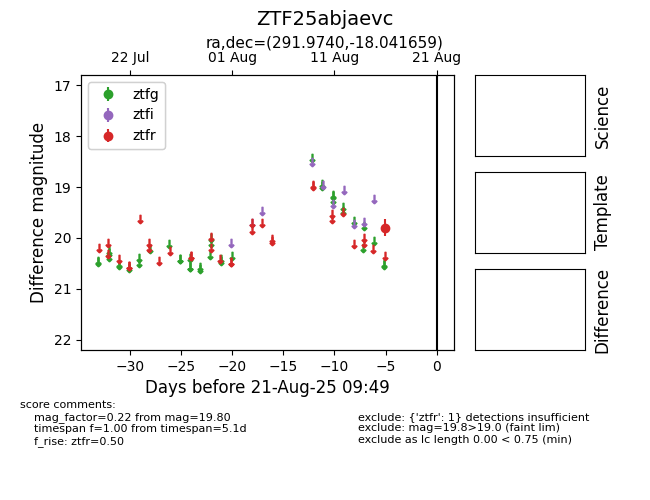

Target ZTF25abjaevc at 2025-08-21 09:49, see:
FINK: fink-portal.org/ZTF25abjaevc
Lasair: lasair-ztf.lsst.ac.uk/objects/ZTF25abjaevc
ALeRCE: alerce.online/object/ZTF25abjaevc
alt names
ZTF25abjaevc (ztf,alerce)
coordinates:
equatorial (ra, dec) = (291.9740,-18.04166)
galactic (l, b) = (20.5004,-15.97824)
photometry
last ztfr=19.80
1 ztfr detections
